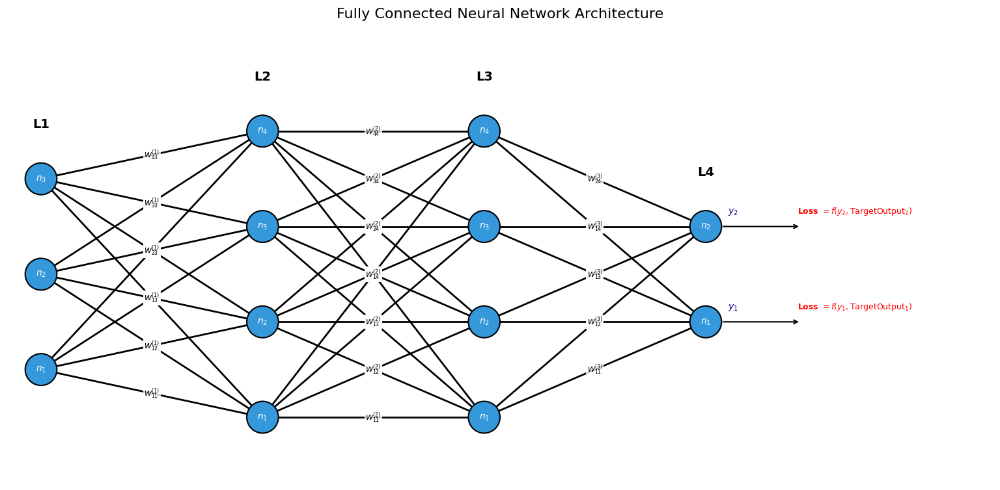
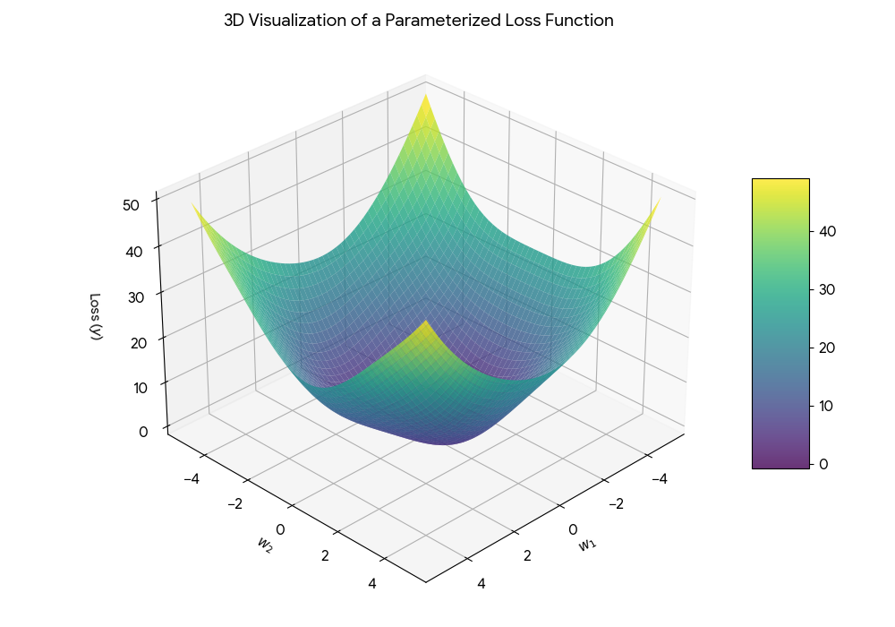

A Neural Network is a powerful Machine Learning model designed to identify complex patterns in data. It is the foundational technology behind modern AI, widely used for Pattern Recognition (such as identifying objects in photos), Image Generation, and Natural Language Processing (like predicting the next word in a sentence).
A Neural Network is one of the few Machine Learning models capable of handling massive amounts of high-dimensional data, such as millions of pixels in an image or billions of tokens in text. Modern Neural Networks are significantly larger than early AI models, both in terms of learnable parameters (the weights) and the depth of internal processing (the number of hidden layers).
Modern Neural Networks require massive computational infrastructure. Training these models on a standard CPU (Central Processing Unit) would take years because CPUs are designed for general-purpose tasks. Instead, modern AI relies on GPUs (Graphics Processing Units) and specialized chips like TPUs (Tensor Processing Units). These processors are built for massive parallelism, allowing them to perform thousands of mathematical calculations simultaneously.
Linear and Logistic Regression, as seen in earlier chapters, take inputs, multiply them by weights, and produce an output. A Neural Network is a "multi-layer" stack of linear and logistic regression units. This multi-layer structure allows the model to process data in stages, where each layer leads to the creation of new features and features given to cost function which computes probabilities of the output values.
Training a Neural Network broadly involves four distinct phases. Later in the sections explore the mechanics of each phase in the following sections:

The first layer is where your "raw features" live. Each neuron ($n_1, n_2, n_3$) represents a measurable attribute, like "Tail Length" or "Whiskers" in a cat classifier. These are the only values grounded in direct reality before the abstraction begins.
Weights represent the "influence" one neuron has on the next. A positive weight is a vote of confidence, while a negative weight acts as a "veto."
Before the activation happens, each neuron performs a linear regression step, accumulating incoming signals plus a Bias ($b$) which acts as the intercept:
The Linear Regression step calculation step 3 is transformed using Activation. By using functions like ReLU or Sigmoid (denoted by $h$), the activation is represented as: $$a_j^{(l)} = h(z_j^{(l)}) \dots (2)$$.
For Sigmoid Activation, we represent the layers as: $$n_1^{(2)} = \sigma\left(W_{11}^{(1)}n_1^{(1)} + b_1^{(2)}\right), \qquad n_1^{(3)} = \sigma\left(W_{11}^{(2)}n_1^{(2)} + b_1^{(3)}\right) \dots (3)$$
For ReLU Activation, we represent the layers as: $$n_1^{(2)} = \text{ReLU}\left(W_{11}^{(1)}n_1^{(1)} + b_1^{(2)}\right), \qquad n_1^{(3)} = \text{ReLU}\left(W_{11}^{(2)}n_1^{(2)} + b_1^{(3)}\right)$$
Combining these for a deeper network, we can write the nested activation for $n_1^{(4)}$ as: $$n_1^{(4)} = \text{ReLU}\left(W_{11}^{(3)} \cdot \text{ReLU}\left(W_{11}^{(2)} \cdot \text{ReLU}\left(W_{11}^{(1)} \cdot n_1^{(1)} + b_1^{(2)}\right) + b_1^{(3)}\right) + b_1^{(4)}\right) \dots (4)$$
By using Activation Functions we allow the network to "bend" the rules, enabling it to learn relationships that aren't just straight lines. These hidden layers automatically combine raw inputs into high-level features.Before the final output is emitted, the weighted sums (Logits or $Z$ values) are passed through a non-linear activation function $f(\mathbf{z})$. This function "interprets" the raw scores to match the mathematical requirements of the specific task:
In the architectural flow, L4 outputs values represented as $y_i$ (the Network Prediction). The Loss Function, denoted as $f(y_i, t_i)$, measures the discrepancy between these predictions and the Target Output ($t_i$).
The Loss Function is parameterized by the weight values $w_i$, often expressed as $L(y_i, t_i; w_i)$. It determines the "cost" or deviation of the network output from the expected target. The mathematical formulation of this error depends strictly on the nature of the problem, as summarized in the table below:

| Loss Function | Output Characteristics | Primary Use Case |
|---|---|---|
|
Mean Squared Error (MSE)
$$L(w) = \frac{1}{n} \sum_{i=1}^{n} (y_i - t_i)^2$$
|
A positive scalar representing average squared distance. Penalizes large errors heavily. | Regression: Predicting house prices or coordinates. |
|
Mean Absolute Error (MAE)
$$L(w) = \frac{1}{n} \sum_{i=1}^{n} |y_i - t_i|$$
|
A positive scalar representing average absolute distance. | Regression: Use when data contains many outliers. |
|
Binary Cross-Entropy (BCE)
$$L(w) = -\frac{1}{n} \sum_{i=1}^{n} [t_i \ln y_i + (1 - t_i) \ln(1 - y_i)]$$
|
Measures the distance between two probability distributions (0 or 1). | Binary Classification: Yes/No, Spam detection. |
|
Categorical Cross-Entropy
$$L(w) = -\sum_{i=1}^{n} \sum_{j=1}^{C} t_{i,j} \ln y_{i,j}$$
|
Compares predicted class distribution against one-hot encoded targets. | Multi-Class: Image recognition (MNIST, CIFAR) or LLMs. |
Loss function is a surface with several minimums. Some of these minimums are called global minimums and local minimums. A core of the Neural Network training is finding these points. A minimum corresponds to a point where $$\nabla L(w) = 0 ...(5)$$. where $\nabla L(w)$ is the gradient of the Loss Function.Rather than using a single equation to solve (5) for weights, a repetitive, step-by-step method locates the lowest point of error, much like walking down a hill This gradient is computed by differentiating $L(w)$ with respect to weights ($w$).The most straightforward way to use gradient information is to update weights by taking a small step in the opposite direction of the gradient. This is calculated using the formula:$$w(\tau) = w(\tau-1) - \eta \nabla L(w(\tau-1))....(6)$$In this equation, the positive value $\eta$ is called the learning rate.The symbol $\tau$ represents a discrete time index, representing the specific iteration count within the sequence of weight updates. After each update, the gradient is calculated again for the new weights, and the process repeats. Because the weights constantly move toward the sharpest possible drop in error, this method is known as gradient descent or steapest descent. More about the Gradient Descent is covered in BackPropogation. For various parameters used by Neural Network Learning algorithm,please refer Parameters
| Function | Visual Graph | Range | Differentiation ($f'(z)$) | Vanishing Gradient? |
|---|---|---|---|---|
| Sigmoid | S-Curve | (0, 1) | $f(z)(1 - f(z))$ | High Risk |
| Tanh | Zero-Centered S | (-1, 1) | $1 - f(z)^2$ | Medium Risk |
| ReLU | L-Shape (Hinge) | [0, $\infty$) | 1 if $z > 0$, else 0 | Low Risk |
| Leaky ReLU | Bent Line | (-$\infty$, $\infty$) | 1 if $z > 0$, else $\alpha$ | Minimal |
For all values where $z > 0$, ReLU acts as the identity function ($f(z) = z$), meaning its derivative is exactly 1. This allows the "error signal" to pass through the neuron unchanged during training, though if $z < 0$, the gradient becomes 0—a state known as the "Dying ReLU" problem.
To calculate the complexity of a Dense Layer, we multiply the input dimension by the output dimension.
Note: In Large Language Models, $n$ is often 4096 or higher, leading to millions of connections per layer.